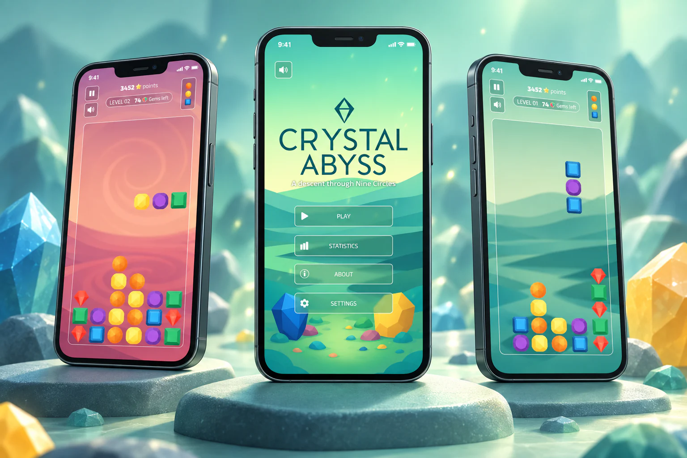

Design around play
The puzzle format introduced a different set of interface priorities from the apps I had designed before.
Crystal Abyss
A puzzle game in the spirit of tile-matching and falling-block games, created in collaboration with Antonio Borrero.

This was my first experience designing a game interface. It meant approaching interaction through the rhythm of play and learning a new design context.
The puzzle format introduced a different set of interface priorities from the apps I had designed before.
Animation was a particularly enjoyable part of the work, giving me room to explore movement and visual feedback within the game experience.
The project expanded my design practice into game UI and gave me a new way to work with animation.
In collaboration with Antonio Borrero ↗